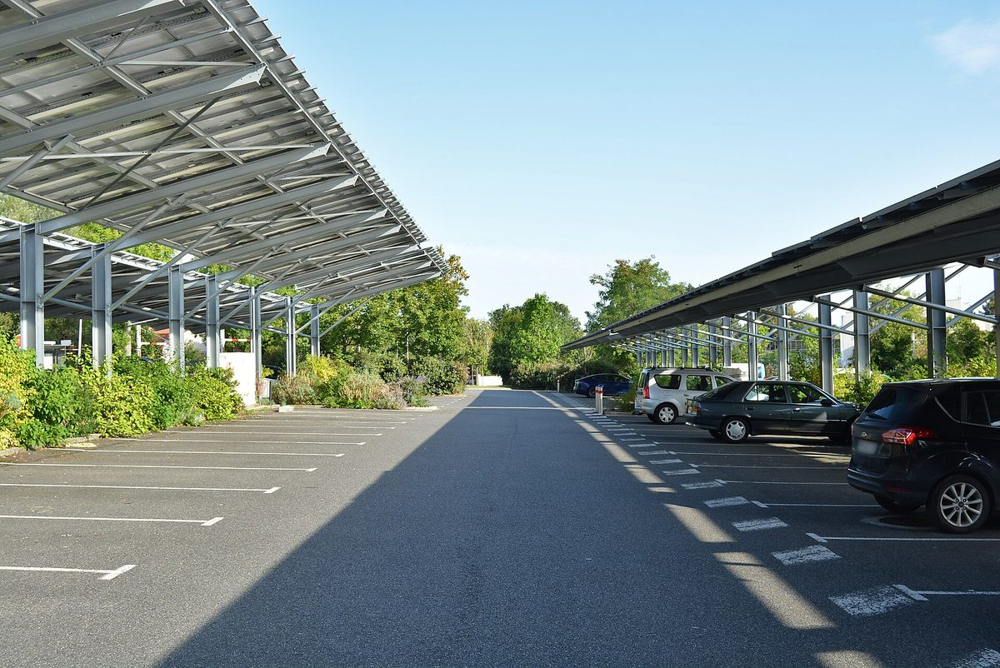

프랑스 레지냥코르비에르 고속도로 나들목 카풀 주차장 개장…도 공공 에너지조합, 80만 유로 태양광 그늘막 세워 공공건물에 전기 나눌 계획

A61 25번 나들목에 승용차 62면·전기차 충전 4면, 공사비 약 80만 유로…오드 도 에너지조합 Syaden, 지역 집단 자가소비로 지자체 연합 공공건물과 지역 주체에 공급 추진, 설치 시기·용량은 미정
프랑스 남부 오드 도 레지냥코르비에르(Lézignan-Corbières)의 A61 고속도로 25번 나들목에 카풀 주차장이 들어서 10월 22일 개장식을 열었고, 오드 도의 공공 에너지·디지털 조합 Syaden은 이 주차장 위에 태양광 그늘막을 세울 계획이다. 올여름부터 쓰이고 있는 주차장은 승용차 62면(장애인 전용 2면, 전기차 충전 4면)과 이륜차 6면, 자전거 시설을 갖췄으며, 공사비 약 80만 유로 가운데 고속도로 운영사 Vinci Autoroutes가 57만 유로를, 기초지자체 연합인 레지냥코르비에르·코르비에르·미네르부아 공동체(CCRLCM)가 땅값으로 15만 유로를 댔다. Syaden이 80만 유로를 들여 세울 그늘막은 '지역 집단 자가소비' 망을 꾸려 공동체 소속 공공건물과 다른 지역 주체에 전기를 대는 것을 목표로 하지만, 설치 시기와 발전 용량은 아직 알려지지 않았다. 개장식에는 나르본 부지사와 앙드레 에르난데스(André Hernandez) CCRLCM 위원장 등이 참석했고, 에르난데스 위원장은 이 주차장이 카풀을 안전하게 하면서 친환경 이동과 에너지 절약, 탄소 배출 감축이라는 과제에도 답한다고 설명했다. 공사를 시작할 무렵에는 희귀 고유종 난초인 오프리스 카탈라우니카(Ophrys catalaunica)가 발견돼 보호 구역과 안내판도 마련됐다.
시민에너지 관점
이미 포장된 고속도로 나들목 주차장 위에 80만 유로짜리 그늘막을 얹어 공공건물들이 전기를 나눠 쓰겠다는 구상은 새 땅을 깎지 않고도 지역 안에서 전기를 만들고 쓰는 길을 보여 준다. 공공 주차장 태양광이 결국 외부 사업자의 몫이 된다는 우려가 있지만, 이 계획은 도 단위 공공 에너지조합이 짓고 지자체 연합의 공공건물이 전기를 받는 구조라는 점에서 다르다. 다만 주민이 출자하거나 지분을 갖는다는 내용은 없어, 아낀 전기요금은 공공 예산에 머물 뿐 주민의 자산이 되지는 못하며, 덴마크가 2009년부터 2020년까지 새 풍력단지 지분의 20%를 지역 주민에게 내놓도록 한 것처럼 공공 부지 발전소도 주민에게 지분을 열어야 지역 소유가 완성된다. 국내 지자체도 공영주차장과 공공시설 부지부터 공공과 주민이 함께 출자하고 함께 쓰는 발전소로 내놓아야 한다.
출처: 랭데팡당(L'Indépendant) 2026-10-24 Stéphanie Pérez 원문 보기
仏レジニャン＝コルビエール、高速道路インターのカープール駐車場が開業…県の公共エネルギー組合が80万ユーロの太陽光シェードで公共施設に電力を分ける計画
A61の25番インターに乗用車62台分・EV充電4台分、工事費約80万ユーロ…オード県のエネルギー組合Syaden、地域集団自家消費で自治体連合の公共施設や地域の主体に供給を目指す、設置時期・容量は未定
フランス南部オード県レジニャン＝コルビエール（Lézignan-Corbières）の高速道路A61の25番インターチェンジにカープール用駐車場が整備され、10月22日に開業式が開かれた。オード県の公共エネルギー・デジタル組合Syadenは、この駐車場の上に太陽光発電シェードを設ける計画だ。今夏から使われている駐車場には乗用車62台分（障害者用2台分、EV充電設備付き4台分）と二輪車6台分、自転車用設備があり、工事費約80万ユーロのうち高速道路会社Vinci Autoroutesが57万ユーロを、基礎自治体の連合であるレジニャン＝コルビエール・コルビエール・ミネルヴォワ共同体（CCRLCM）が用地分として15万ユーロを負担した。Syadenが80万ユーロを投じるシェードは、「地域集団自家消費」の網をつくり、共同体の公共施設やほかの地域の主体に電気を送ることを目指すが、設置時期や発電容量はまだ明らかになっていない。開業式にはナルボンヌ郡副知事やアンドレ・エルナンデス（André Hernandez）CCRLCM委員長らが出席し、エルナンデス委員長は、この駐車場がカープールを安全にすると同時に、環境にやさしい移動や省エネ、炭素排出削減といった課題にも応えると説明した。工事の着手時には希少な固有種のラン、オフリス・カタラウニカ（Ophrys catalaunica）が見つかり、保護区域と案内板も設けられた。
市民エネルギーの視点
すでに舗装された高速道路インターの駐車場に80万ユーロのシェードを載せ、公共施設どうしで電気を分け合うという構想は、新たに土地を削らずに地域の中で電気をつくって使う道を示している。公共駐車場の太陽光は結局外部事業者の取り分になるという懸念もあるが、この計画は県単位の公共エネルギー組合が建て、自治体連合の公共施設が電気を受け取る仕組みである点で異なる。ただ、住民が出資したり持ち分を持ったりする内容はなく、浮いた電気代は公共予算にとどまるだけで住民の資産にはならない。デンマークが2009年から2020年まで新設風力発電の持ち分の20％を地域住民に提供するよう義務づけたように、公共用地の発電所も住民に持ち分を開いてこそ地域所有が完成する。韓国の自治体も、公営駐車場や公共施設の用地から、公共と住民がともに出資しともに使う発電所として開くべきだ。
出典: ランデパンダン（L'Indépendant） 2026-10-24 Stéphanie Pérez 原文を読む
法国莱济尼昂科尔比埃高速公路出口拼车停车场启用…省级公共能源联合体计划投入80万欧元建光伏遮阳棚，为公共建筑分配电力
A61高速25号出口设小汽车车位62个、电动车充电车位4个，工程费约80万欧元…奥德省能源联合体Syaden拟以地区集体自用模式向市镇联合体公共建筑及地方主体供电，安装时间与装机容量未定
法国南部奥德省莱济尼昂科尔比埃（Lézignan-Corbières）在A61高速公路25号出口建成一座拼车停车场，并于10月22日举行启用仪式；奥德省公共能源与数字联合体Syaden计划在这座停车场上方建设光伏遮阳棚。停车场自今年夏天起已投入使用，设有小汽车车位62个（其中残障人士专用2个、配备电动车充电桩4个）、摩托车车位6个及自行车设施。约80万欧元的工程费中，高速公路运营商Vinci Autoroutes出资57万欧元，基层市镇联合体莱济尼昂科尔比埃-科尔比埃-米内瓦共同体（CCRLCM）以土地折价15万欧元。Syaden将投入80万欧元建设的遮阳棚，目标是构建“地区集体自用”网络，为共同体所属公共建筑和其他地方主体供电，但安装时间和装机容量尚未公布。纳博讷专区区长和CCRLCM主席安德烈·埃尔南德斯（André Hernandez）等出席了启用仪式。埃尔南德斯表示，这座停车场让拼车更安全，同时也回应了绿色出行、节能和减少碳排放等课题。工程开工时还发现了稀有特有兰花加泰罗尼亚眉兰（Ophrys catalaunica），当地为此划设了保护区并设立了说明牌。
市民能源视角
在已经铺好的高速公路出口停车场上加装80万欧元的遮阳棚，让公共建筑分享电力，这一构想表明无需新开发土地，也能在地方内部发电、用电。有人担心公共停车场光伏最终会成为外部开发商的收益，但这项计划由省级公共能源联合体建设、由市镇联合体的公共建筑用电，结构有所不同。不过，计划中没有居民出资或持股的内容，节省下来的电费只留在公共预算里，无法成为居民的资产。正如丹麦在2009年至2020年间要求新建风电项目把20%的股份提供给当地居民，公共用地上的电站也要向居民开放股份，地方所有才算完整。韩国地方政府也应从公营停车场和公共设施用地做起，把它们开放为公共部门与居民共同出资、共同使用的电站。
来源: 《独立报》（L'Indépendant） 2026-10-24 Stéphanie Pérez 查看原文
Lézignan-Corbières opens motorway carpool car park as Aude's public energy syndicate plans €800,000 solar canopy to share power among public buildings
62 car spaces including four EV charging bays at A61 junction 25, built for about €800,000; Aude energy syndicate Syaden aims to supply intermunicipal public buildings and local actors through territorial collective self-consumption, with timing and capacity not yet given
A carpool car park at junction 25 of the A61 motorway in Lézignan-Corbières, in the southern French department of Aude, was formally opened on October 22, and Syaden, Aude's public energy and digital syndicate, plans to build solar canopies over it. In use since this summer, the car park has 62 car spaces (two reserved for people with reduced mobility and four with EV charging points), six spaces for motorbikes and facilities for bicycles; of its roughly €800,000 cost, motorway operator Vinci Autoroutes contributed €570,000 and the Lézignan-Corbières, Corbières and Minervois community of communes (CCRLCM), an intermunicipal body, provided €150,000 in land. The €800,000 canopy project by Syaden aims to set up a territorial collective self-consumption loop supplying the community's public buildings and other local actors, but no installation date or generating capacity has been announced. The sub-prefect of Narbonne and CCRLCM president André Hernandez were among those at the ceremony, and Hernandez said the site makes carpooling safer while also addressing goals such as low-carbon mobility, energy savings and lower emissions. A rare endemic orchid, Ophrys catalaunica, was found when work began, and a protected area and an information panel have been set up.
Citizen Energy View
Putting an €800,000 canopy over an already paved motorway car park so that public buildings can share its power shows a way to generate and use electricity locally without clearing new land. Some worry that solar on public car parks ends up as profit for outside developers, but here a public departmental energy syndicate builds the plant and the intermunicipal body's public buildings take the power. Still, there is no mention of residents investing or holding a stake, so the savings on power bills stay in public budgets rather than becoming residents' assets; just as Denmark required new wind farms from 2009 to 2020 to offer 20% of their shares to local residents, power plants on public land need to open stakes to residents for local ownership to be complete. Korean local governments should start with public car parks and public facility sites and open them as power plants that the public sector and residents fund and use together.
Source: L'Indépendant 2026-10-24 Stéphanie Pérez Read the original